Budget Register Entries
Procedure: Create Budget Register Entries
To create budget registry entries, follow these steps:
- Open Budgeting module > Budget register entry.
- Click Budget register entry in the new group of the Action Pane.
- Select the Budget model (identifier of budget) whose budget balance will be affected by the processing of this transaction.
- Select the Budget transaction code to classify the budget register entry.
- Optionally, specify a Reason code for the budget register entry.
- Set the focus in the lines grid. The Date for the budget register entry line determines the period that the budget will be recorded to which budgeting period.
- Select an Account structure.
NOTE: The step of assigning an account structure to a budget account entry is required because not all dimensions in an account structure may be enabled and the same budget enabled dimension may be in use within multiple account structures for the chart of accounts.
- Enter the Dimension values for the budget enabled dimensions. The order in which the dimensions are entered is based on the order in which the dimensions appear within the account structure.
- Enter the budget Amount and the budget Amount type. The budget amount type will default to expense but can be changed. The amount type is needed since the main account is not a required element for budgeting.
- Specify the transaction, Currency.
- Click Update the budget balances on the Action Pane. By taking this action, the budget balance for the budget model and dimension combination will be updated based on the amount for the period in which the line date falls.
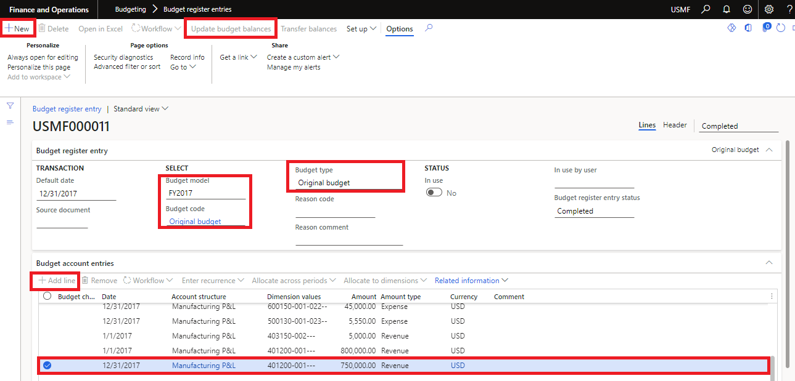
Procedure: Create a Budget Transfer
You can create budget transfers by creating a budget register entry that has a budget code that is associated with the Transfer budget type. You decrease the budget of one or more financial dimension values, and then increase the budget of other financial dimension values by the same amount.
- Open Budgeting > Budget register entries.
- On the Action Pane, click Budget register entry.
- On the Budget register entry Fast Tab, select a budget model and a budget code that is associated with the Transfer budget type.
- In the Budget account entries grid, click Add line.
- Enter the account structure and financial dimension values to transfer a budget amount from.
- Enter a negative amount, such as -1000.00.
- Click Add line to add a line for the account structure and financial dimension values that you want to transfer the budget amount to. Then enter a positive amount, such as 1000.00.
- If multiple accounts must be used to increase the budget of the financial dimension values that are receiving the budget amount, add lines, and then enter a negative amount on each line.
- Click Update budget balances and then click OK.
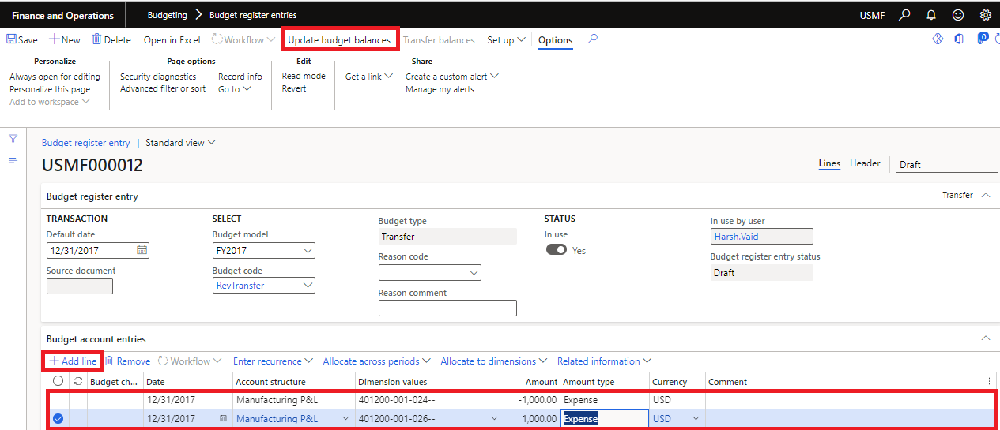
Procedure: Create a Budget Transfer When You Creating Another Entry
You can create a budget transfer when you are creating a budget register entry. Budget Transfer helps to transfer the budget from posted GL accounting voucher
- Open Budgeting > Common > Budget register entries.
- On the Action Pane, click Budget register entry to create a budget register entry.
- On the Budget register entry Fast Tab, select a budget model and a budget code.
NOTE: You can create a transfer from any of the budget types, such as original budget or Revision.
- Click Create transfer to open the Create budget transfer form.
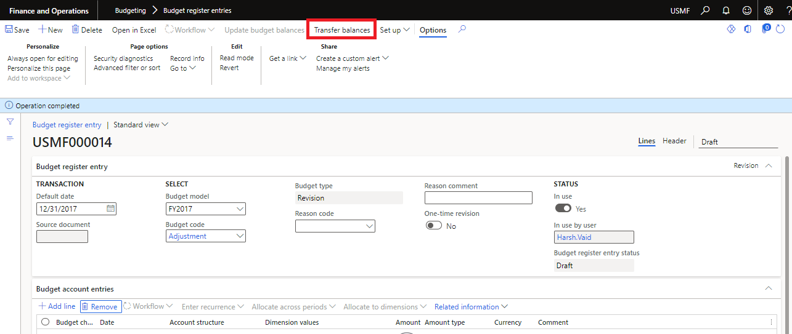
- Verify the information at the top of the form. Then enter the from date, Account structure, From financial dimension values, and Amount.
IMPORTANT: To decrease the budget for the from financial dimension values, you must enter a negative amount. The amount that is transferred from one or more financial dimension values must equal the amount that is transferred to the selected financial dimension value. The transaction total at the bottom of the form must be zero (0).
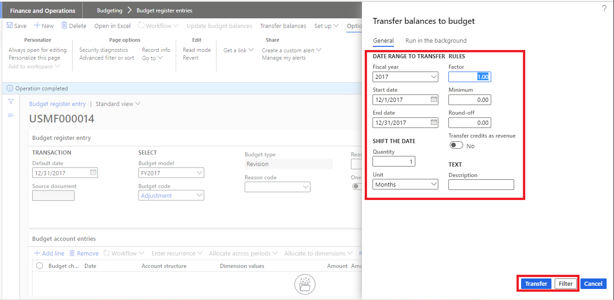
- Click on Filter button to apply filter based on multiple criteria.
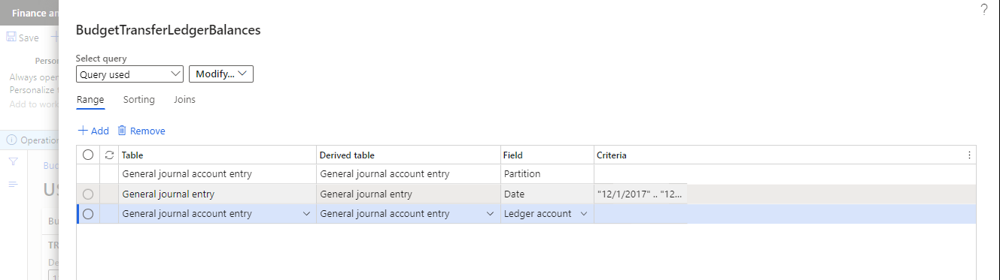
- Click Update budget balances.
- If workflow is activated for the budget code that you selected for the budget transfer, a message informs you that the budget transfer request is submitted to workflow.
- If workflow is not activated, click OK, or enter batch criteria.
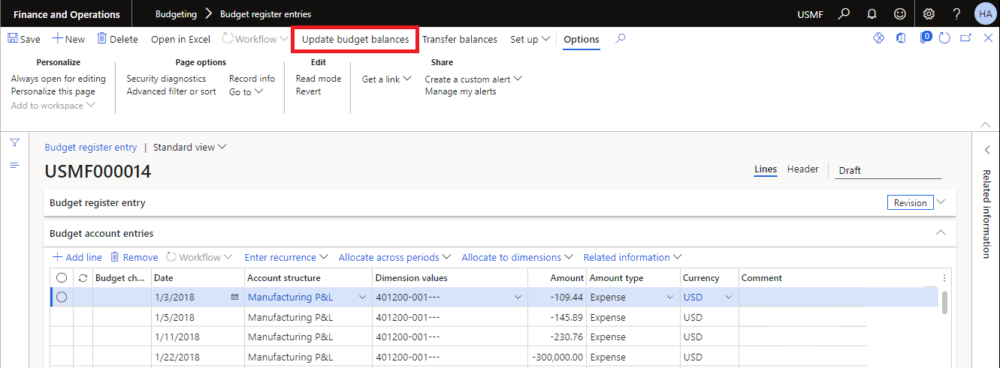
Procedure: Create Recurring Budget Register Entries
For some expenses, such as rent or lease, the amount that is budgeted will typically be the same amount for each period. You can replicate a budget account entry to accommodate this need. For example, you decide to create a budget account entry every month until 31/12/2020. You perform this function on 22/6/2020. Therefore, after you apply this function, you will have budget transaction line for every month through the end of the year. To create a recurring budget register entry, follow these steps:
- Open Budgeting > Common > Budget register entries.
- On the Action Pane, click Budget register entry to create a budget register entry.
- On the Budget register entry Fast Tab, select a budget model and a budget code.
- In the Budget account entries grid, click Add line. Then enter the financial dimension values, amount, and amount type.
- Click Enter recurrence.
- Enter the Interval type, Interval, and Expiration date, and then click Create.
- In the Budget account entries grid, verify the new lines, and then click Update budget balances. Click OK or enter a batch criterion.
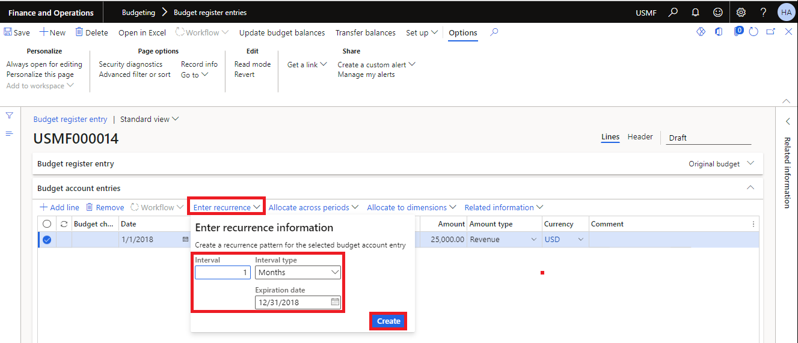
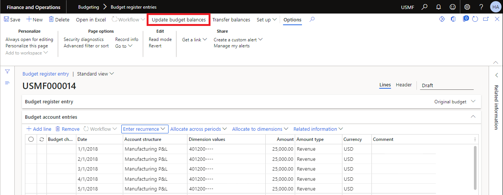
Procedure: Allocate A Budget Amount Across Dimension Values
Budget allocation terms can be used to define a pre-determined allocation to dimension values by percentage. For example, if specific budgeted amounts for travel are allocated based on a percentage by department; that allocation can be defined by using an allocation term that is later used when you are creating budget amounts. The use of an allocation term provides an automated way to create the breakdown of a budget amounts across dimension values or combinations of dimension values. To perform this function setup of budget allocation terms is required.
- Open > Budgeting > Common > All Budget register entry
- Follow the steps outlined in Procedure: Entering Budgets to create a budget account entry and save it.
- Select the line that you just created.
- Select Allocate to dimensions. This opens the dialog box where you can select the budget allocation term to apply
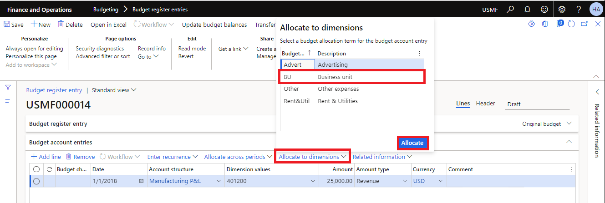
- Select the Allocation term and then click Allocate. Notice that the original budget account entry is reversed, and new budget account entries are created based on the definition of the budget allocation term.
- In the Budget account entries grid, verify the new lines. A reversal entry is created for the budget account that you specified, and new budget account entries are created based on the allocation that you selected.
- Click Update budget balances. Click OK or enter a batch criterion.
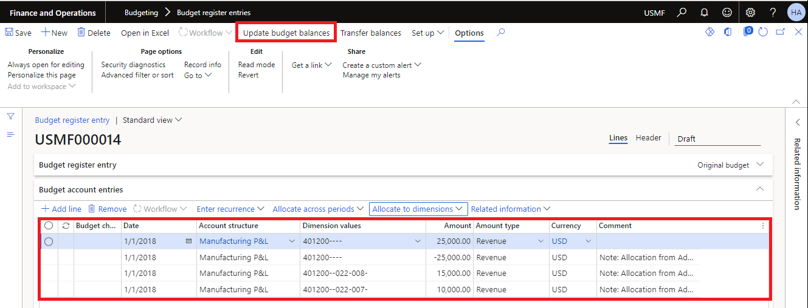
Procedure To Setup Budget Allocation Terms (Allocate to Dimension)
Use the Budged allocation terms form to define the financial dimension values and the percentages that are used to generate budget allocation. These budget allocation terms provide an automated way to distribute percentages of budget amount across financial dimension values. For example, a travel budget can be allowed to multiple departments by using one budget account entry.
- Click Budgeting > Setup > Basic budgeting > Budget allocation terms.
- Click New, and then enter an identifier and a description for the budget allocation term.
- Click Add, and then enter the percentage of the total amount that is allocated.
- You can create a copy of an existing allocation term for this budget allocation term. Click Copy to select the existing allocation term.
- Click the percentage, and then select a value for one or more financial dimensions.
- Repeat steps 2 through 4 for each budget allocation term that you have to set up.
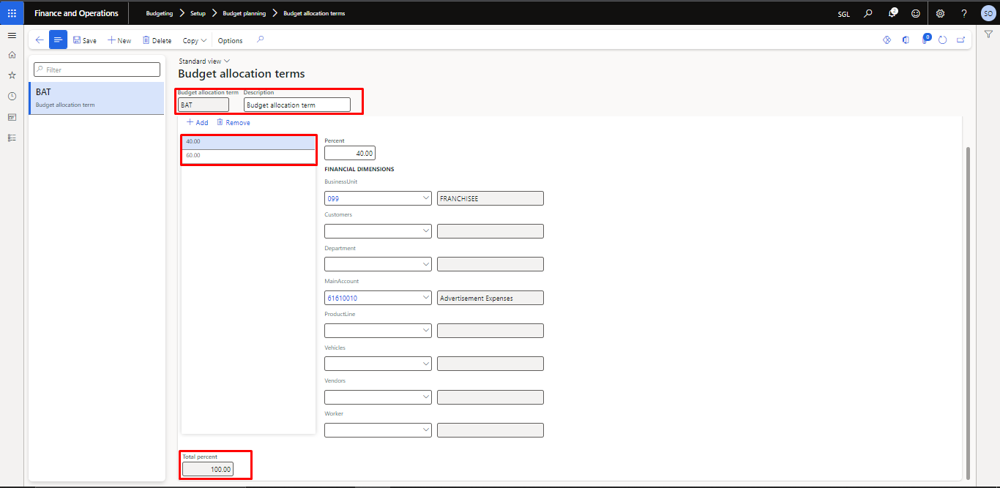
Procedure: Allocate Budget Amounts Using A Period Allocation Key
Period allocation keys let you define allocations by percent to specific periods. The period allocation key functionality is not new to Microsoft Dynamics 365 Finance and Operation and can be defined from General ledger > Setup > Periods > Period allocation key.
- Define the Period allocation key and give it a name on the Period allocation key form.
- Click Lines and create lines. You can allocate percentages by month. You can also specify the dimension values that should be allocated the defined percentage.
- Click the Financial dimensions tab and enter the dimensions values.
- To apply the period allocation key to a budget account entry click Allocate across periods from the Budget register entry form. After applying the period allocation key, a reversal is created for the budget account entry. The budget account entry is entered together with a new budget account entry that is based on the percent allocation by month which is defined in the period allocation key.
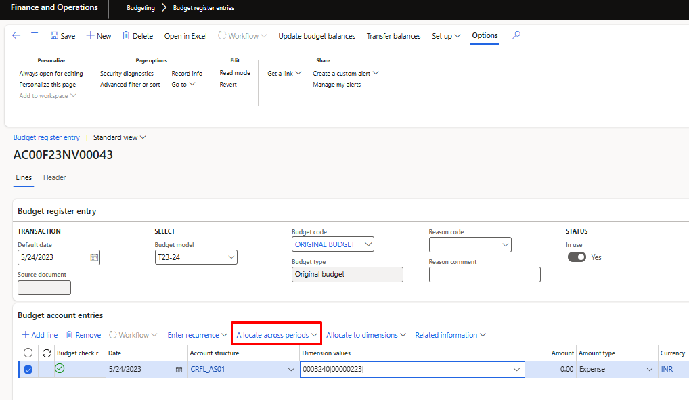
Procedure: Creating Period Key (Allocate Across Period)
Use this form to create period allocation keys that distribute budget transactions in fiscal year periods, or to explode sales orders in defined periods.
Path: 1. General ledger> Setup> Periods> Period allocation keys or
2. Inventory management> Setup> Forecast.
Tabs
Tab | Description |
Create and view period allocation keys. | |
View the information on the Overview tab for the period allocation key that is selected on the Overview tab. | |
Graphics | View a graph of the period allocation key. To define the graphical presentation, click Setup. |
Fields
Field | Description |
Period key | Create or edit a period allocation key. |
Name | Enter or view a descriptive text for the allocation key. |
Fixed | Select the check box if the allocation starts from the opening period of the year. Alternatively, the system date is the starting point. |
Images
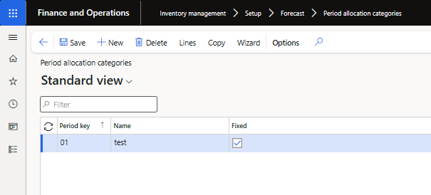
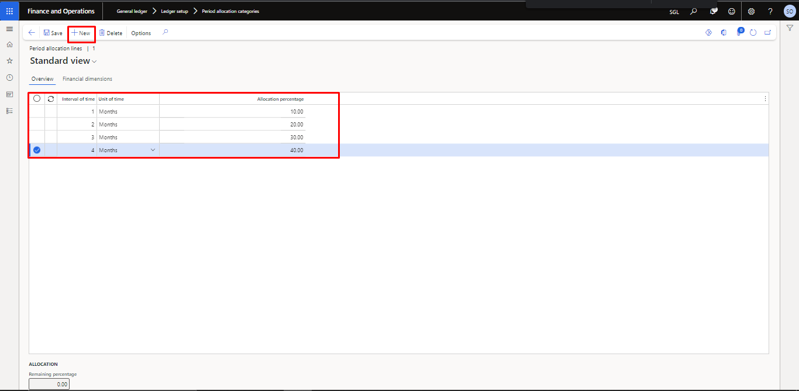
Problem Statement: Detailed procedure on budget upload of multiple GL’s using template not included in the FDD.
Uploading budget register entries through data management.
Exporting the template for uploading the budget register entries
- Path: Workspace > Data Management > Export.
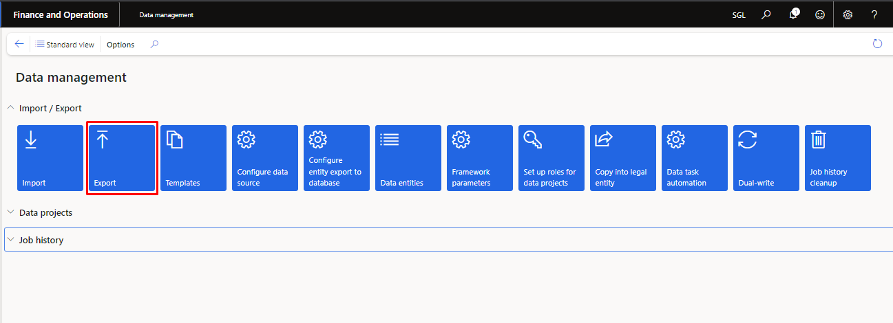
- Click on the Export.
- Now enter the name and description.
- In data project operation type select Export.
- In selected entities click on add entities.
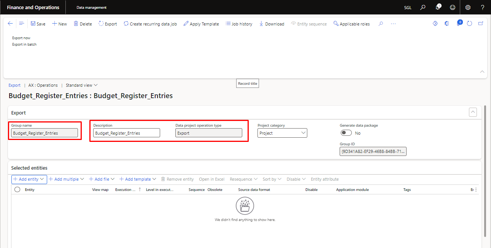
Below Pop will come
- In Entity Name use Budget Account Entries Name.
- Type Data Format use Excel.
- Now Click on add.
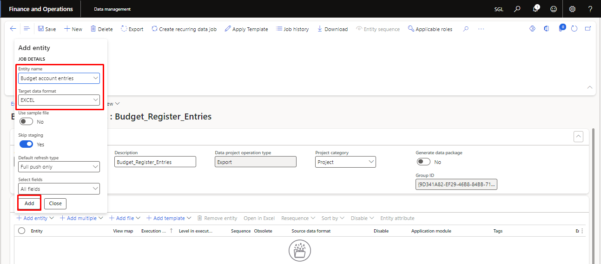
We can see one single line is appearing in below image in the Selected Entities tab.
Now click on Export.
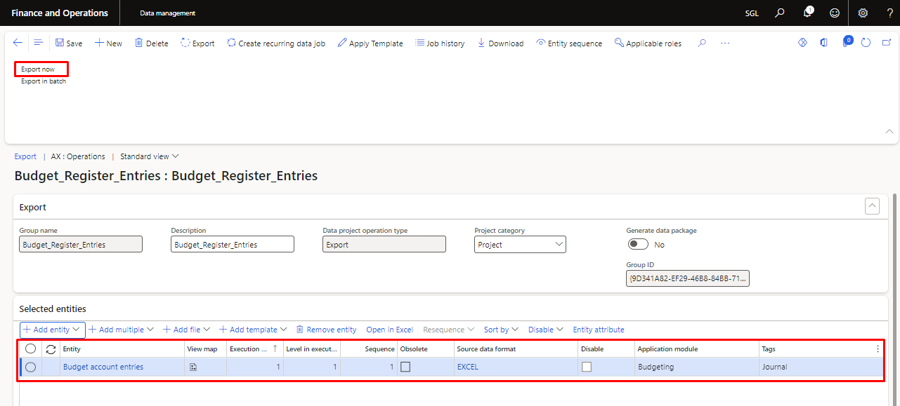
After Exporting the Data download the package.
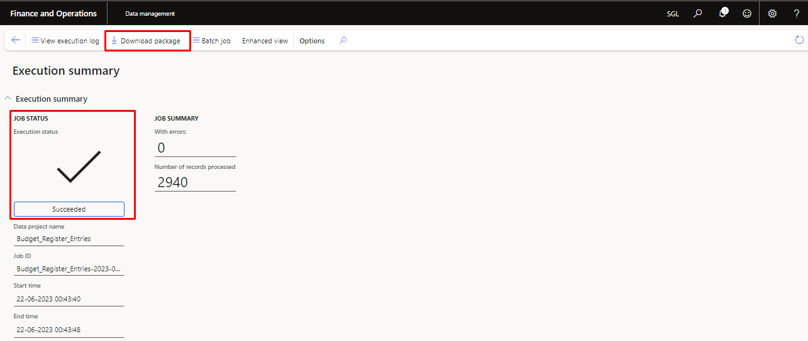
Now Extract the Excel file of Budget Register Entries.
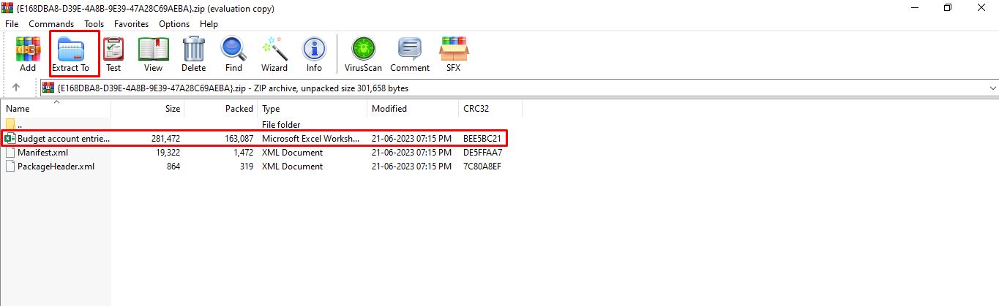
In Excel we get the field which we Required to field for exporting the budget register entries.
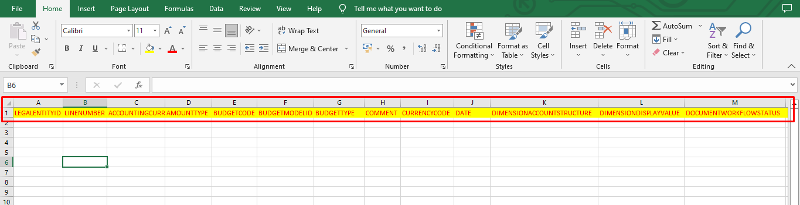
Creating a Sample Budget Register Entries Excel
Below image is an example of the budget register entries in excel.
For example, we have created the 12 entries of the same GL+BU.
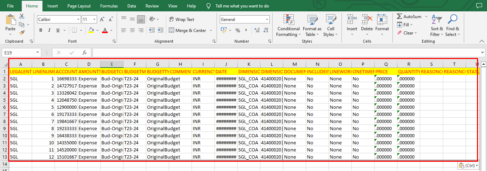
Importing The Budget Register Entries
For uploading the Budget Register Entries follow the below steps:
Path: Workspace > Data Management > Import.
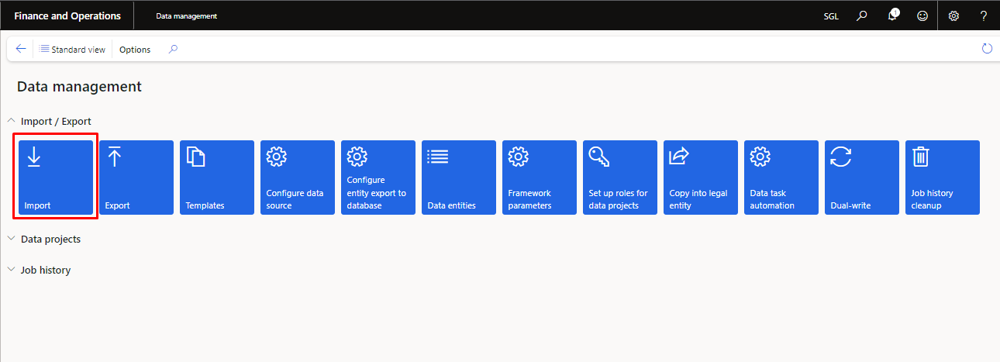
- Give the group name and description.
- Select Data project operation type as Import.
- In Selected Entities click on add file.
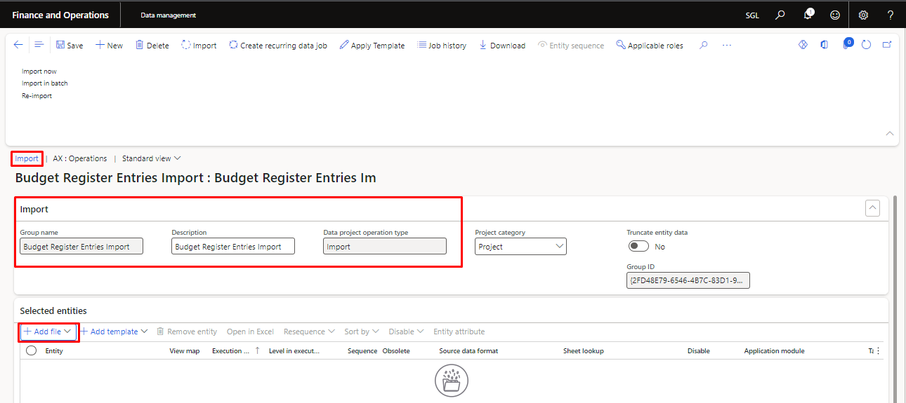
- After clicking in the Add file below pop will appear.
- In Source Data Format select the Excel or Format Data Type.
- IN Upload Data File select the Excel.
- Then one line will appear in the Selected entities.
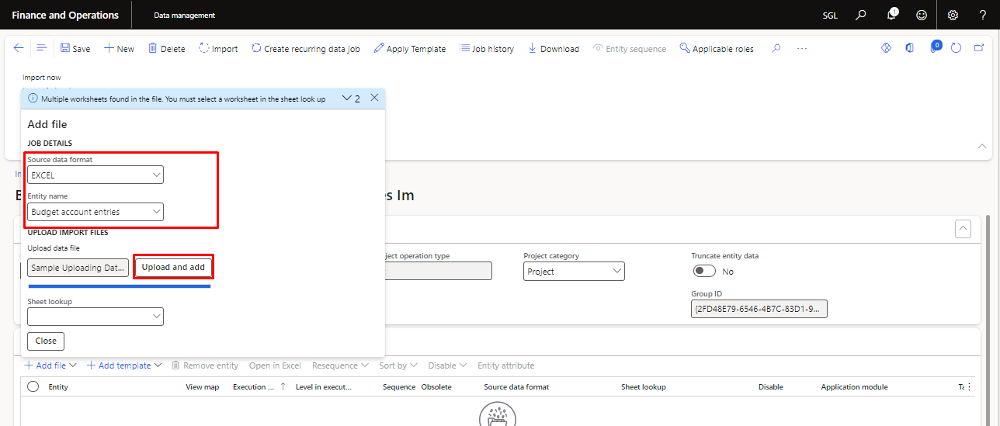
- Then click on the Import for uploading the budget register entries.
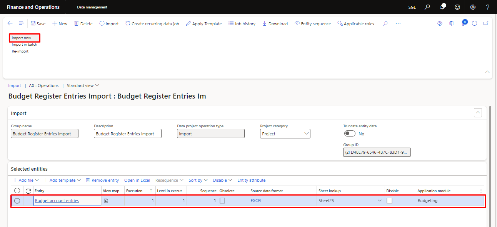
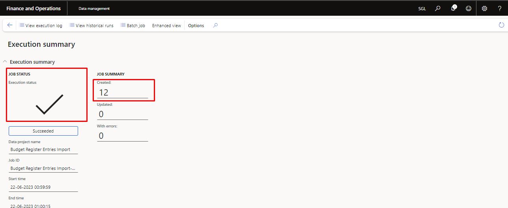
Budget Register Entries After Importing the Data
After importing the Data, we can see the Budget register entries.
- Path: Budgeting > Budget Register Entries.
After Uploading/Importing the data the system will create the budget register entries.
For example, we have uploaded the twelve entries. In the below image we can see system has created the Budget Register Entries with twelve lines.
Currently the budget register entries are in draft position. We need to confirm the details and the click on the update budget balance for provide the amount for that GL.
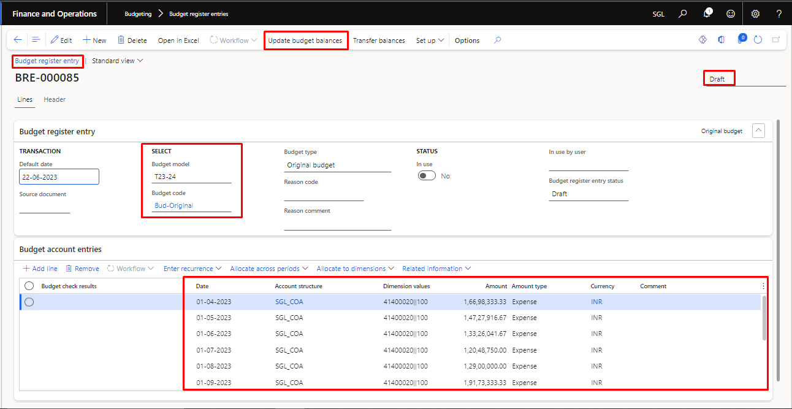
Budget Transfer Entry From One GL to Another GL
To transfer the unused as well as future budget from one GL to another
- within group
- outside the group
To transfer RS xxxx amount from xx GL to another GL withing the same group.
Also, they want to transfer the RS xxxx GL amount from another GL outside the group.
Let’s create the scenario for better understanding:
Within Group Transfer
Here we can see the GL 61620060 and 61620070 belong to the same group i.e., Advertisement Expense.
Withing group transfer is demonstrated below and also the result were given in screenshots.
Amount before transferring the amount from one GL to another GL withing the same group:
In below image we can see the amount of GL:
As on 01-06-23
GL | AMOUNT |
61611160 (adv exp) | ₹ 33,75,000.00 |
61611170 (adv exp) | ₹ 15,37,517.00 |
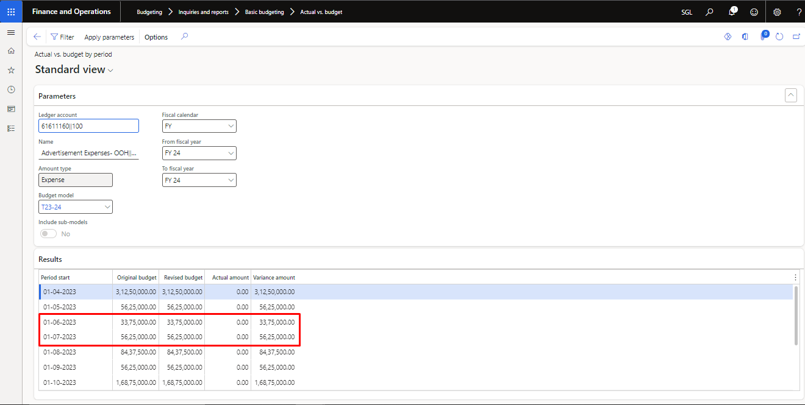
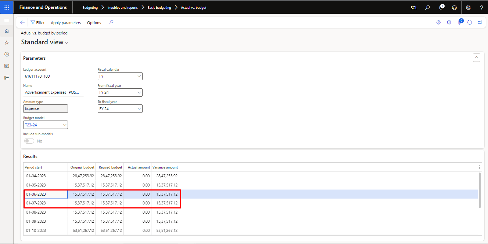
Creating the budget transfer entry:
For transfering the budget for one GL to another GL within the same group (61611160 to 61611170) we made a budget transfer.
For creating the transfer budget register entries from one GL to another GL within same group.
Path: Budget > Budget Register Entries
- click on new in Fast tab
- select the budget model and budget code as budget transfer
- click on add line then fill the account structure also fill the GL from which you want to transfer the amount.
- Also add another line to which you are transferring the GL amount.
Note: amount should be in negative from which you are transferring the GL amount.
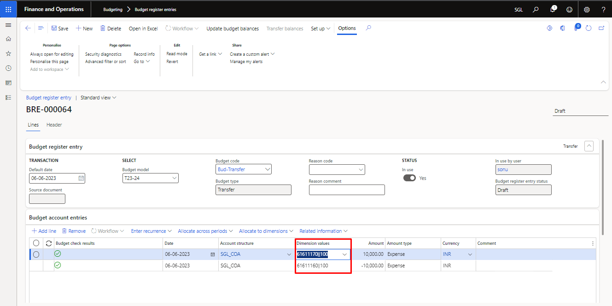
In the above image we can see the from GL amount is negative and to GL is positive which means we transferring the 10000 amounts from 61611160 to 61611170.
Result: in the below two screenshots we can see the amount is transfer
After transferring the amount from one GL to another GL within same group
As on 01-06-2023
GL | Amount |
61611160 (adv exp) | RS 33,65,000 |
61611170 (adv exp) | RS 15,47,517 |
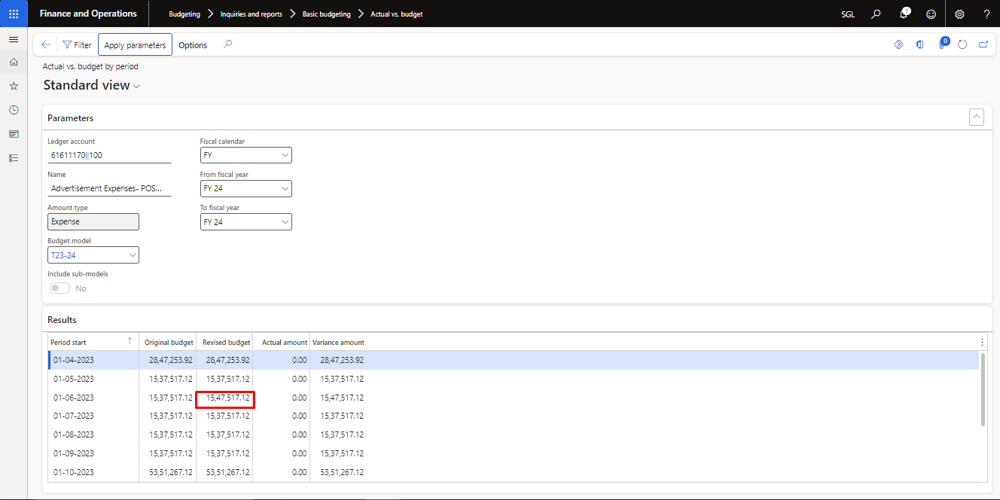
Outside The Group Transfer
Here we can see the GL 61630050 belongs to Advertisement Expenses and 61700010 belong to the group i.e., Bank Commission
Outside group transfer is demonstrated below and also the result were given in screenshots.
Amount before transferring the amount from one GL to another GL outside the group:
In below image we can see the amount of GL:
As on 01-06-23
GL | AMOUNT |
61630050 (adv exp) | RS 19,14,035 |
61700010 (bank comm) | RS 3,488 |
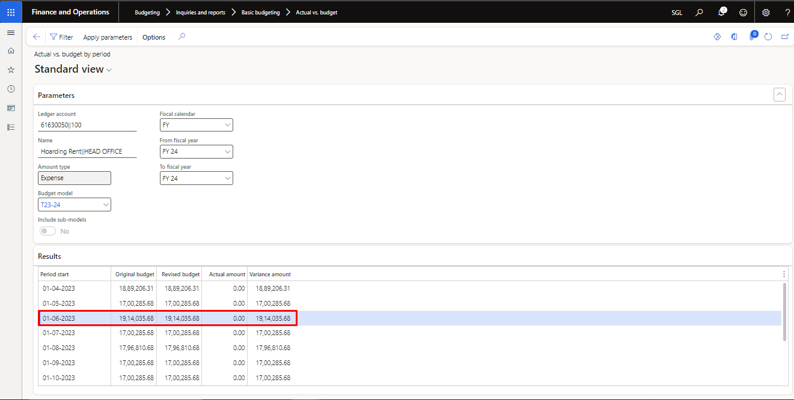
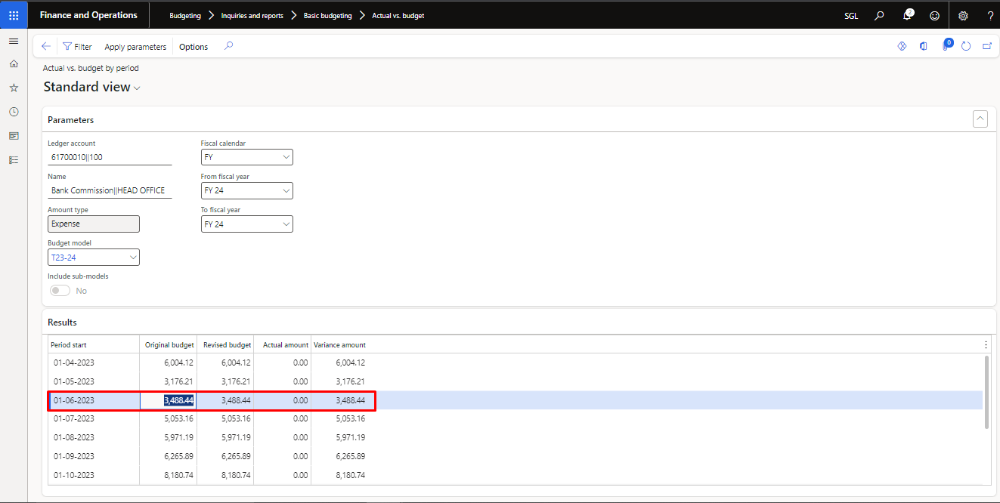
Creating the budget transfer entry:
For transfering the budget for one GL to another GL outside the group (61630050 to 61700010) we made a budget transfer.
For creating the transfer budget register entries from one GL to another GL outside the group.
Path: Budget > Budget Register Entries
- click on new in Fast tab
- select the budget model and budget code as budget transfer
- click on add line then fill the account structure also fill the GL from which you want to transfer the amount.
- Also add another line to which you are transferring the GL amount.
Note: amount should be in negative from which you are transferring the GL amount.
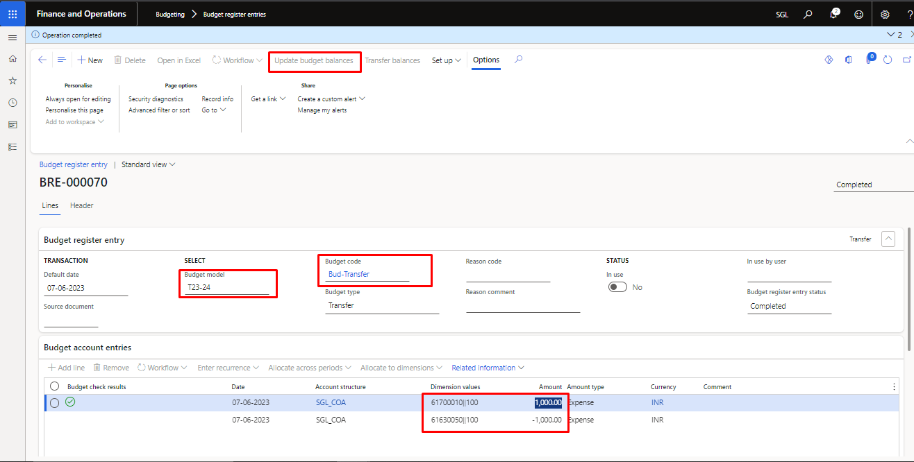
Result: in the below two screenshots we can see the amount is transfer
After transferring the amount from one GL to another GL outside the group.
As on 01-06-2023
GL | Amount |
61630050 (adv exp) | RS 19,13,035 |
61700010 (bank comm) | RS 4,488 |
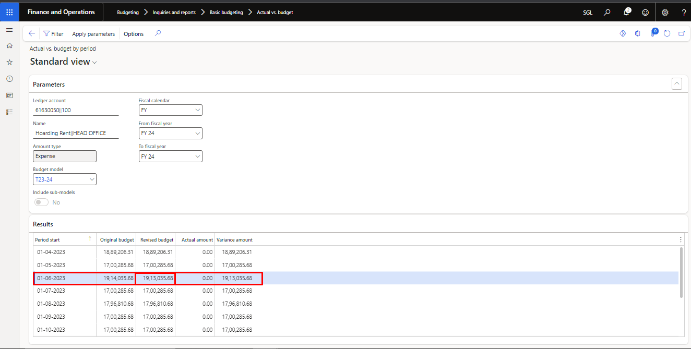
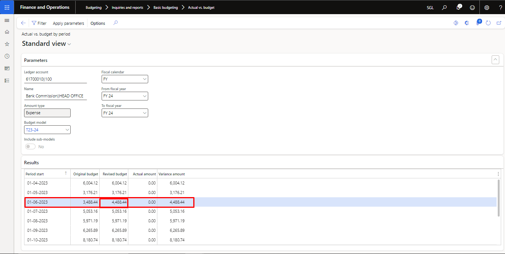
Budget Transfer Entry From One Month To Another
To transfer the unused as well as future budget from one GL to another (both within and outside the group).
To transfer the unused GL amount from one to month to another month within group as well as outside the group.
Let’s understand with the example how we can achieve this:
Transferring Budget from One Month to Another Month Within the Same Group
Transferring budget amount from one month to another month within the same group.
So, in this we have selected the GL 61611190 which belong to the Advertisement Expenses group.
Withing group transfer is demonstrated below and also the result were given in screenshots.
Amount before creating budget transfer from one month to another month with the same group:
Date | Amount |
01-06-2023 | 44,75,000 |
01-07-2023 | 33,75,000 |
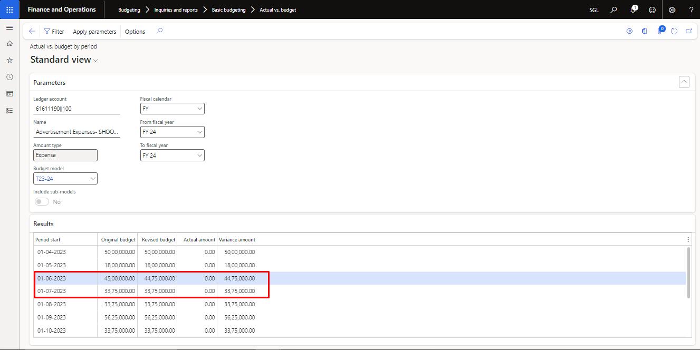
Creating the budget register transfer entry to transfer the amount from one month to another withing the same group
In below image we are transferring budget amount from one month to next month within the same group.
Path: Budget > Budget Register Entries
- click on new then fill the budget model and the budget code as budget transfer.
- Now add one line with the negative amount from which you want to transfer the amount also fill the date from which you are transferring the amount.
- Create another line with the same amount and give the date to which you are transferring the amount.
- Then click on update budget balance.
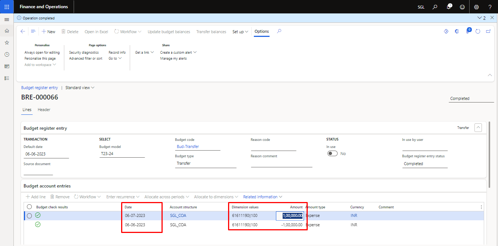
Result: After transferring the amount from one month to another within the same group
Now after updating the budget balance, we can see that the amount is transferred from one month to another month within the same group.
Date | Amount |
01-06-2023 | RS 43,75,000 |
01-07-2023 | RS 34,75,000 |
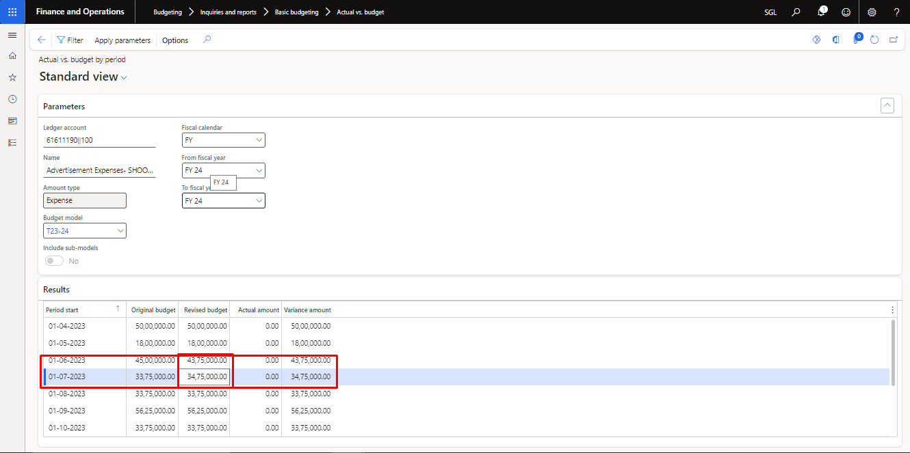
Transferring The Budget from Month to Another Month Outside of The Group
Transferring budget amount from one month to another month outside the group.
So, in this we have selected the GL 61630040 which belong to the Advertisement Expenses group and GL 61700015 which belong to the Bank Commission group.
Outside group transfer is demonstrated below and also the result were given in screenshots.
Amount before creating budget transfer from one month to another month outside the group:
Date | GL | Amount |
01-06-2023 | 61630040 (adv group) | 39,844 |
01-07-2023 | 61700015 (bank comm) | 48,269 |
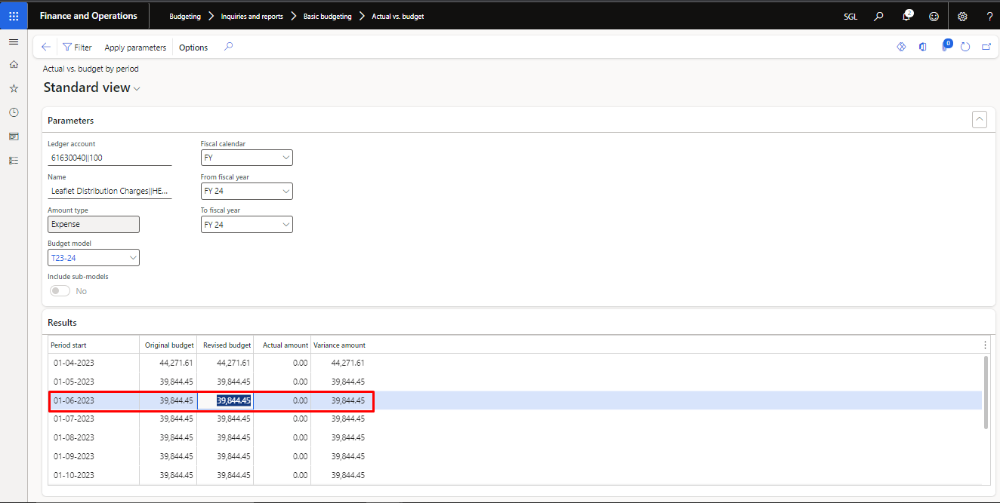
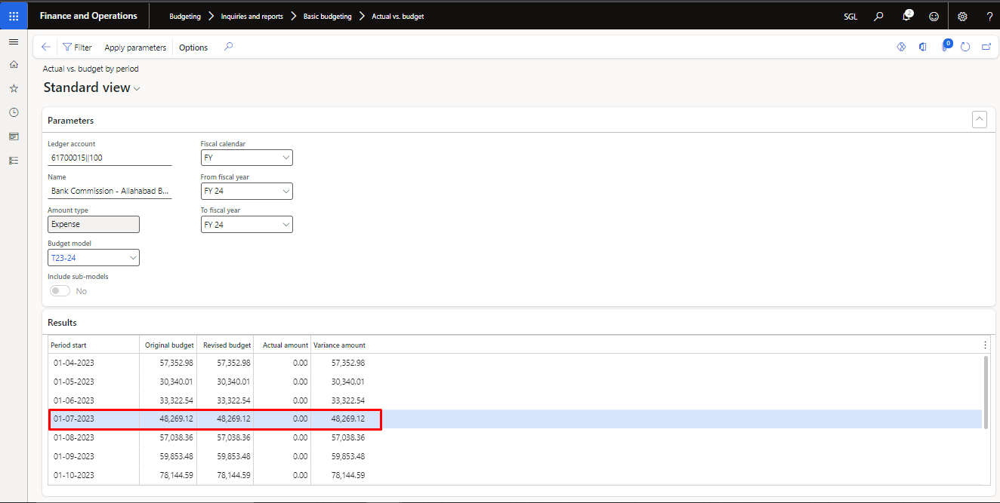
Creating the budget register transfer entry to transfer the amount from one month to another outside the group
For transferring the budget amount from GL 61630040 (adv exp) to GL 61700015 (bank comm) from one month to another.
In the below example we are transferring the GL 61630040 (adv exp) as on 01-06-2023 to GL 61700015 (bank comm) on 01-07-2023.
For creating the budget transfer entry:
Path: Budget > Budget Register Entries
- click on new then fill the budget model and the budget code as budget transfer.
- Now add one line with the negative amount from which you want to transfer the amount also fill the date from which you are transferring the amount.
- Create another line with the same amount and give the date to which you are transferring the amount.
- Then click on update budget balance.
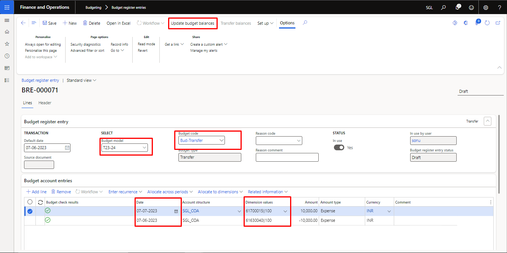
Result: After transferring the amount from one month to another outside the group
Now after updating the budget balance, we can see that the amount is transferred from one month to another month outside the group.
Amount after creating budget transfer from one month to another month outside the group:
Date | GL | Amount |
01-06-2023 | 61630040 (adv group) | RS 29,844 |
01-07-2023 | 61700015 (bank comm) | RS 58,269 |
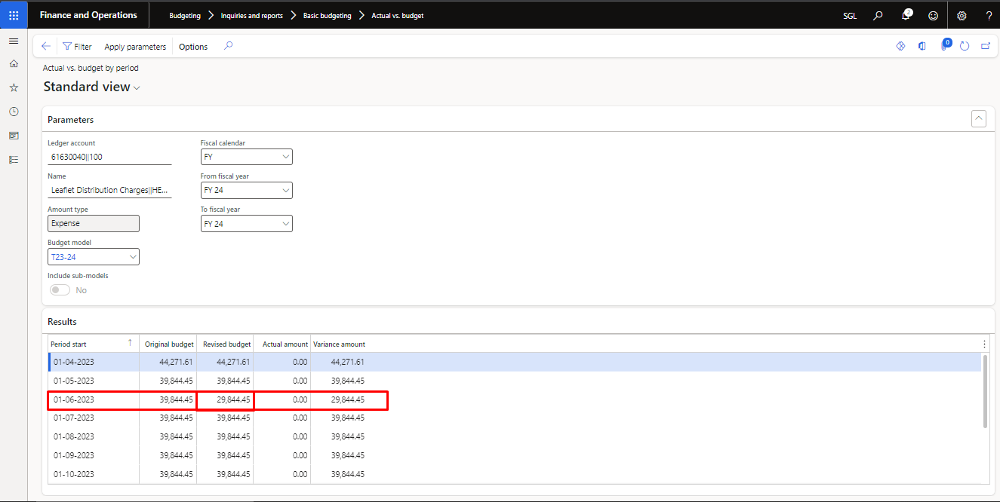
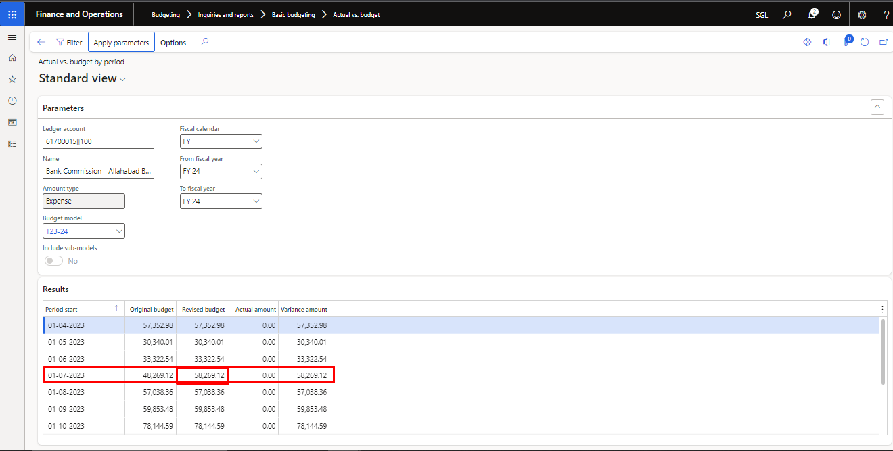
Revenue And Other Income
For revenue, no restriction is to be placed if it exceeds the budget, even though the budget will be uploaded to generate the Actual Vs Budget report.
Only budget register entries need to be done.
For creating budget register entries.
Path: Budgeting > Budget Register entries.
- click on new in fast tab.
- Then select the budget model and budget group.
- Then click on add line and select the account structure and date and select the GL which is related to the revenue then fill the amount then click on update budget balance.
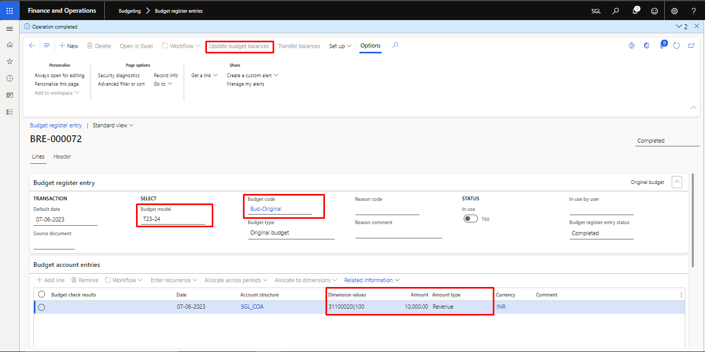
Result:
In the below image we can see the budget amount is appearing after update the budget balance.
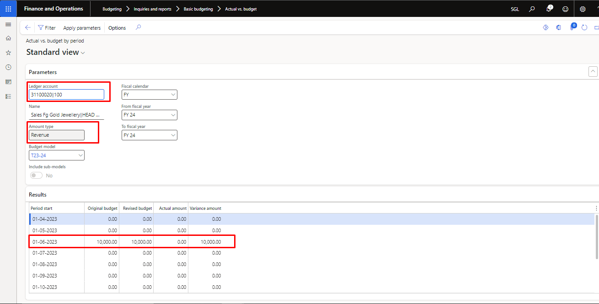
Accumulated Depreciation
Accumulated Depreciation being credit in nature has been grouped under Fixed Assets.
For creating the depreciation proposal budget register entry:
Path: fixed asset > budget > fixed asset budget journal
- Then click on new and select the fixed asset budget journal
- Then click on lines.
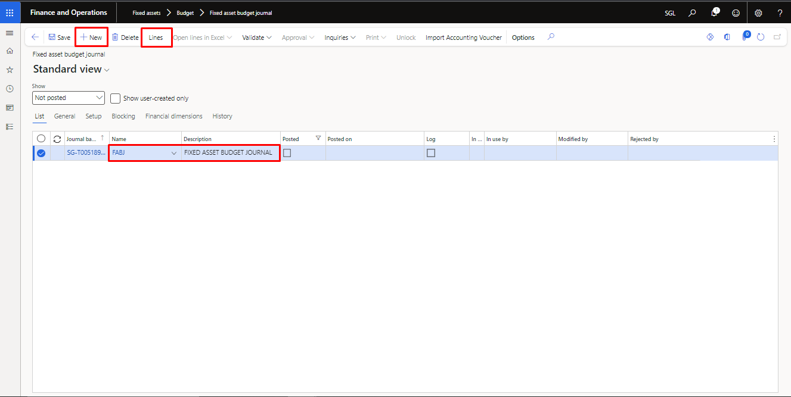
- After clicking on lines click on the proposal > depreciation proposal.
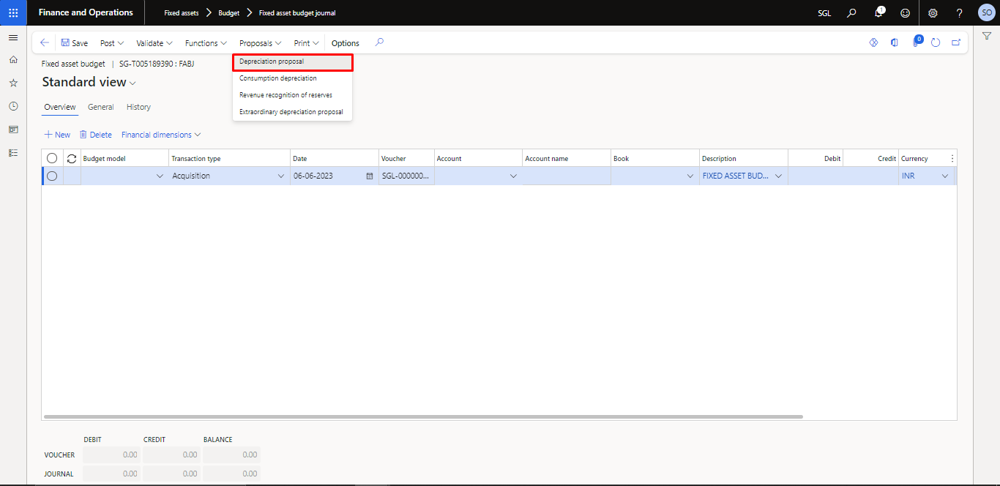
- Following pop up will appear select the budget model and date interval.
- Also select the summarize depreciation for summarize amount in the lines.
- Then click on the filter to select the fixed asset or fixed asset group in which you want to create depreciation budget proposal.
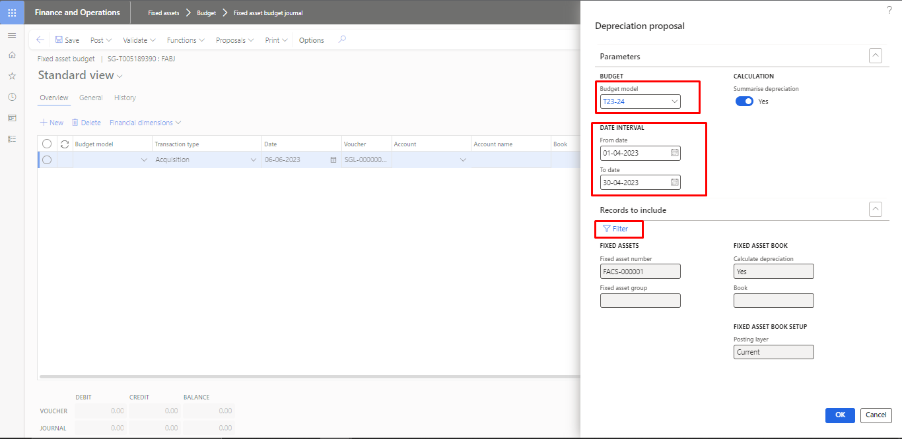
In the below image you can see the following tab will open just fill the details as per the requirement.
- After clicking on ok you will see the line is got created.
- click on post and transfer the amount to fixed asset and ledger budget.
Now in budget register entry you will find the budget register with budget code fixed asset.
Click on update budget balance your amount for the GL will be updated.
Pre requisites: there should be default budget code should be created of fixed asset type.
Attaching The Attachment During Creating The Budget Request On Purchase Order
Understanding this from an example,
Creating a purchase order
Path: Accounts Payable > Purchase Order > All Purchase Order.
The budget Amount is Exceeding by RS 1,00,000. So, for attaching the document Click On the button Shown in the below Screenshot:
Click on New and attach the File in the Purchase Order.
Now for creating the Budget Register Request
Click on the Financial > Budget Check Errors or Warnings.
Click on the ‘create budget Request’.
After Click on the ‘Create Budget Request’ below pop will appear in the system.
Here See the Details of Budget Register Entry Such as Budget Register Number, Budget Model, Budget Code, Transaction Date, Currency, Account Structure, Dimension value, Amount.
Click on Create Budget Request for Creating or Requesting a Budget Register Entry.
In the Budget Register Entry, We Can check the one entry has Been Created by the Behalf of that Purchase Order Number (Source Document).
Budget Control must be on Posting on PO while Invoicing (System Must give warning on 80% & must block on 100 % Exceed of Budget)
Example: -
Remarks | Case | Result | Amount |
Budget balance for the main account – 43030210 – Printing & Stationary expenses | Budget register entry |
| 10,000.00 |
No warning till 80% of budgeted amount. | Line Amount < Budget threshold amount | Budget check passed | 0-8,000 |
Need warning when line amount exceeds 80% | Line Amount > Budget threshold amount | Budget check passed but with warnings | 8,000-10,000 |
No posting allowed when 100% budget amount is utilized. | Line Amount > Total Budgeted amount | Budget check failed | more than 10,000 |
Allow posting with warning even if 100% budget is utilized to certain users. | Line Amount > Total Budgeted amount – (for certain users) | Budget check passed but with warnings | more than 10,000 |
Budgeted amount
Budget balance for the main account – 43030210 – Printing & Stationary expenses – Rs 10,000/-
No warning till 80% of budgeted partner.
No warning till 80% of budgeted amount i.e. – Rs. 0 to Rs. 8,000/-
Warning when line amount exceeds 80%
Budget check passed but with warnings – when 80% of budget funds is used i.e., more that Rs.8,000 till Rs.10,000/-
No posting allowed when 100% budget amount is utilized.
Budget check failed – when 100% budget is utilized i.e., more that Rs.10,000/-
Same behavior on the Vendor invoice.
Remarks | Case | Result | Amount |
Budget balance for the main account – 43030210 – Printing & Stationary expenses | Item No. – EXP000005 have posting profile - 43030210 |
| 15,000.00 |
No warning till 80% of budgeted amount. | Line Amount < Budget threshold amount | Budget check passed | 0-12,000 |
Need warning when line amount exceeds 80% | Line Amount > Budget threshold amount | Budget check passed but with warnings | 12,000-15,000 |
No posting allowed when 100% budget amount is utilized. | Line Amount > Total Budgeted amount | Budget check failed | More than 15,000 |
Allow posting with warning even if 100% budget is utilized to certain users. | Line Amount > Total Budgeted amount – (for certain users) | Budget check passed but with warnings | More than 15,000 |
No warning till 80% of budgeted partner.
No warning till 80% of budgeted amount i.e. – Rs. 0 to Rs. 12,000/-
Warning when line amount exceeds 80%
Budget check passed but with warnings – when 80% of budget funds is used i.e., more that Rs.12,000 till Rs.15,000/-
No posting allowed when 100% budget amount is utilized.
Budget check failed – when 100% budget is utilized i.e., more that Rs.15,000/-
Purchase invoice posting restricted.
Workflow needed for every task.
Name to the tasks with workflow and workflow matrix
Case | Workflow Matrix | Budget Code Name | Remarks |
Original budget | Approval by Branch head | Expense Budget | Used to create original budget |
1st Revision | Approval by CFO | 1st Revision Budget | Used for 1st revision request in the budget |
2nd Revision | Approval by Director | 2nd Revision Budget | Used for 2nd revision request in the budget |
Transfer from 1 Branch (FD) to another Branch (FD) | Approval by both branch heads and CFO | Allocation Budget | Used for allocation of expense from 1 subbranch to other branches |
Roll over budget | Approval by Branch head | Transfer Budget | Used for roll over budget register entry |
Lapse Budget | Approval by Branch head | Lapse Budget | Used to lapse the monthly budget balance |
Solution - Separate budget code and separate workflow needs to be configured; it will trigger the separate workflow as configured in the budget code.
Budget register entries must be created using the respective budget code created for the task.
For the budget register entry, the workflow attached with the budget code will get triggered.
Workflow will assign the approval of the budget register entry to different person for the different budget code as per the configurations.
Roll over & lapse of Budget will be main account wise.
To lapse the budget balance for period reversal Budget register entry is to be passed.
Example: -
Remarks | Amount |
Budget of main account 43030210 (Printing & Stationery Expenses) | Rs. 17,200.00/- |
Actual expenses | Rs. 16,001.00/- |
Balance to be lapsed | Rs. 1,199.00/- |
Solution: -
A new budget register entry needs to be created with the amount = Rs. – 1999.00/- and balance of the same is need to be updated.
After updating the budget register entry balance the balance for the same Main account + Financial dimensions will lapse.